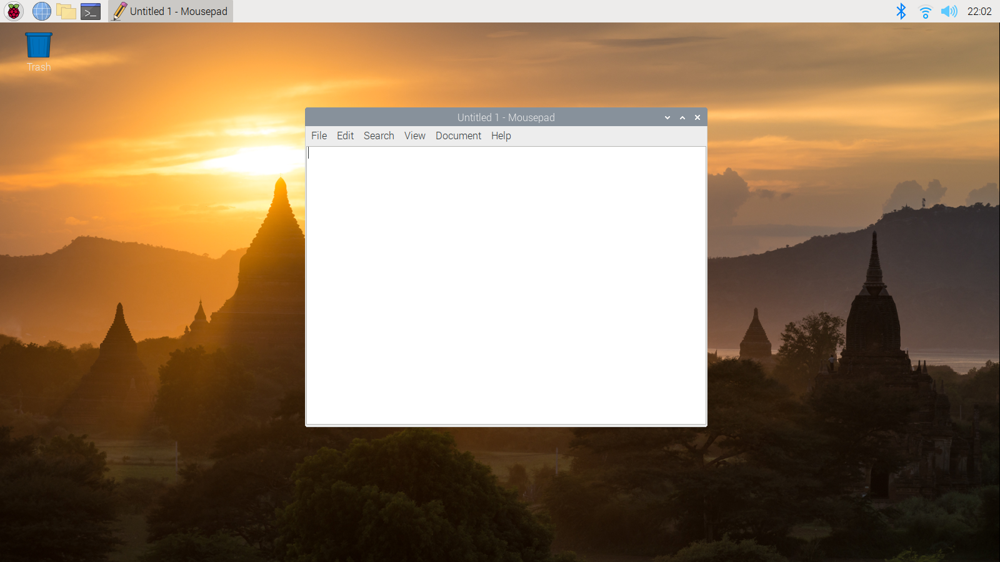
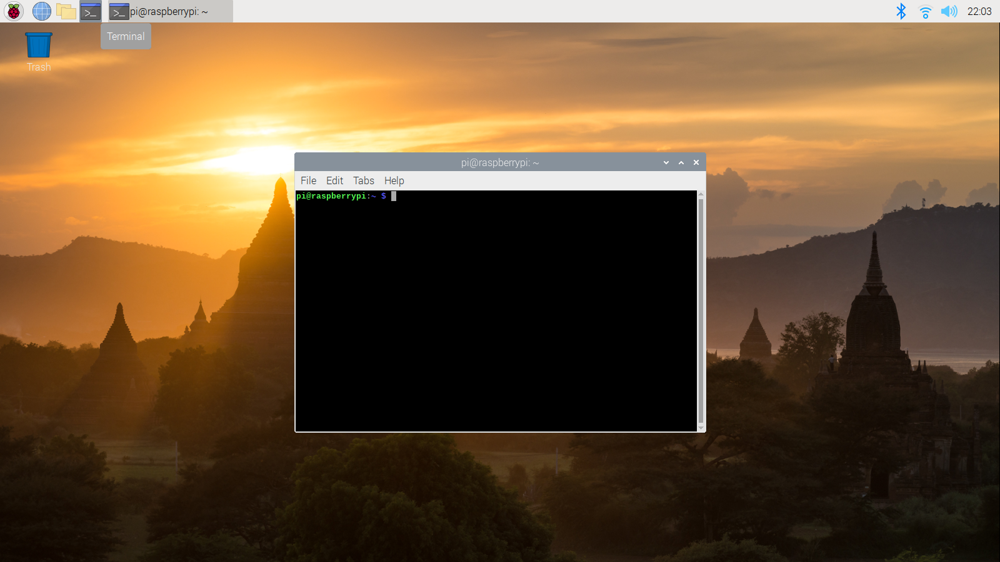
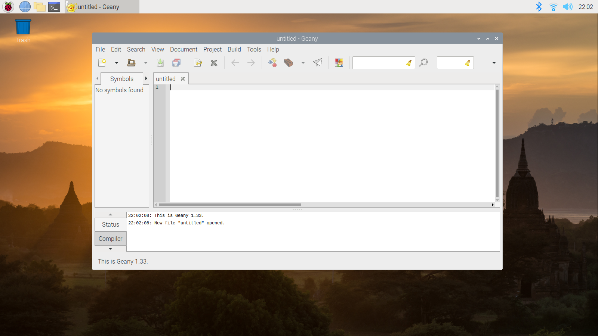

There are many programs that come preinstalled with the Raspberry Pi OS. These can be found my clicking on the raspberry icon in the top left of the screen.
The text editor is just one of many programs installed on the Raspberry Pi. You are able to read and write text files from a GUI.
The terminal is one of the most important tools that you will have access to. It can be found under the programs list or in the task bar.
In this version of the Raspberry Pi OS, the default Integrated Development Environments installed are Thonny and Geany. Thonny is specific to Python, while Geany works for a multitude of languages
